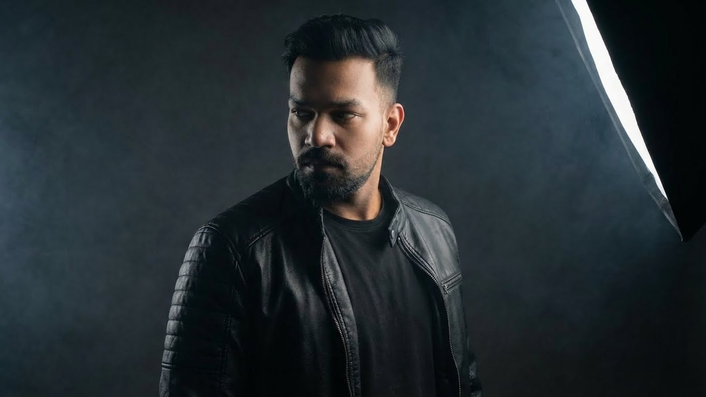

Somewhere EP
The new EP, out now. Stream it on Spotify or YouTube Music.
Watch
More on the VinCrux YouTube channel.
Discography
Every single, EP and album, straight from Spotify.
About VinCrux

Raosaheb Ramteke, known professionally as VinCrux, is a Nagpur-born multi-genre record producer and songwriter who blends melody-forward writing with club-ready sound design.
Spanning electronic, house, hip-hop, alt pop and alt R&B, his catalog is defined by emotional clarity, modern grooves and cinematic textures: music made for both late-night headphones and high-energy rooms.
He began producing in 2018, turning music into both a creative refuge and an adrenaline rush, and released his first single in 2020 during the pandemic. His tracks have since been broadcast on SongdewTV, reaching more than 200 million households. Releasing independently through his own imprint, VinCrux Records, he is on a mission to soundtrack real life, one mood, one memory and one drop at a time.
- Melodic house
- Tech house
- Pop rap
- R&B
- Cinematic
Press & features
Reviews, playlists and community features.
-
TopMusic.News
EDM Music for Party and Dance Floor
Picked “Get Up” for a dance-floor playlist, with a section on why it works in a set.
-
SpaceSour
Best of the Moon: Best Tracks of the Month, Chapter Three
Included “Get Up” in its monthly roundup of standout tracks.
-
Sleeping Bag Studios
VinCrux – “Within”
A dedicated review of the “Within” track and video.